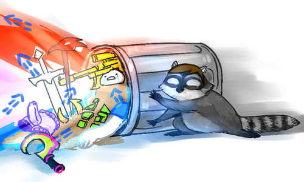

A lot of people very carefully packaged up their Homestuck, put in the garbage can. Some people put all of it in, some people put a little. There were bungees. There was a brick put on the lid.
And then Hussie the raccoon came over and knocked the whole thing over and now the Homestuck is spilling everywhere, my god, it’s everywhere.
Someone please draw raccoon hussie!

I am currently not near coherent enough to react to the flash so here, have this.